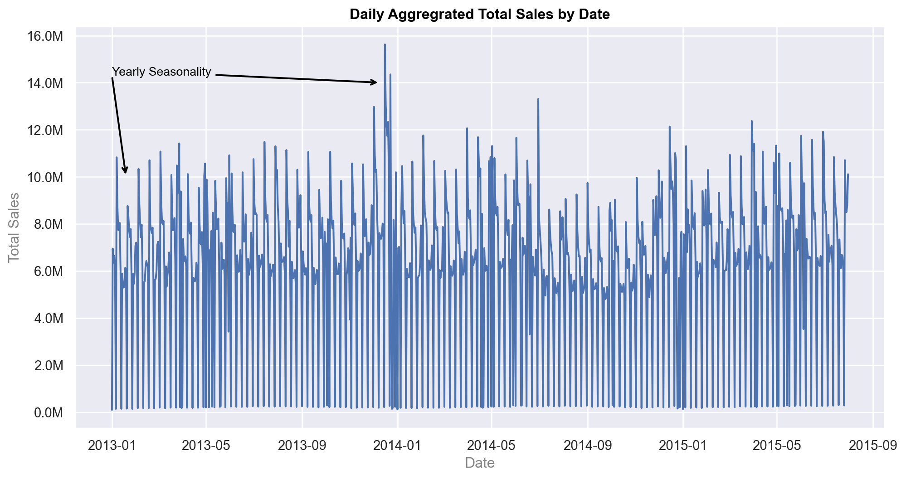
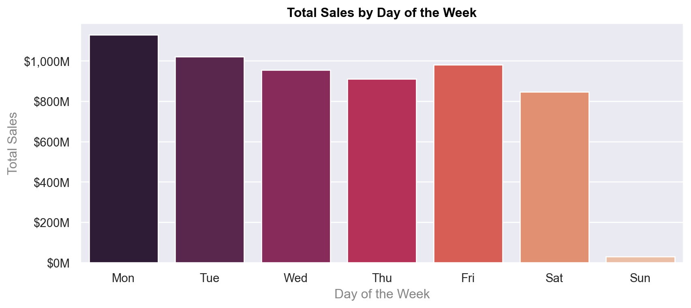
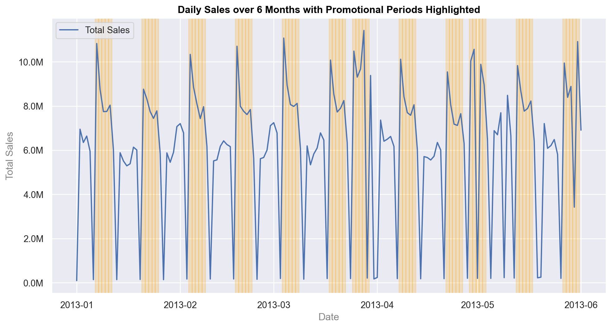
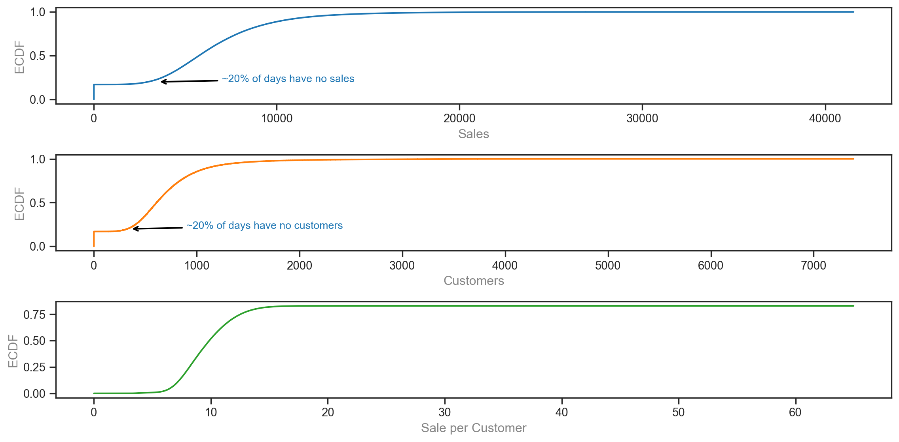
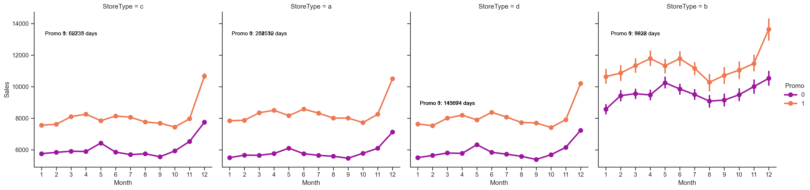
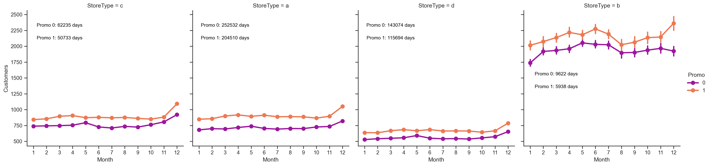
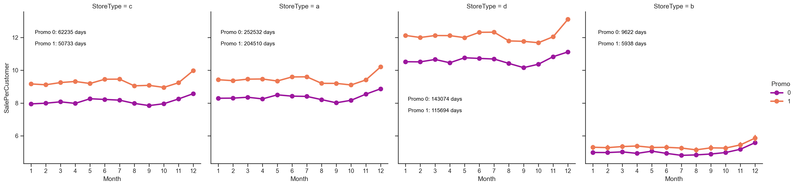
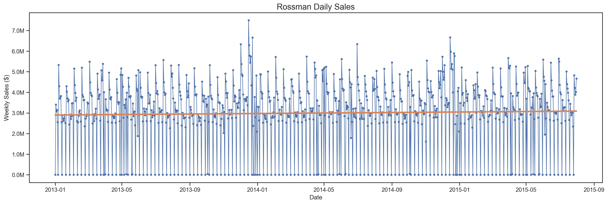

# !pip install openpyxl
# !pip install ast
"""
Importing all libraries to execute code
"""
# Suppress warnings
import warnings
warnings.filterwarnings("ignore")
# Basic imports
import os
import time
import json
import ast
import pickle
import itertools
import numpy as np
import pandas as pd
from datetime import datetime
# Data visualization
import matplotlib.pyplot as plt
import matplotlib.ticker as mticker
from matplotlib.dates import date2num
from matplotlib.ticker import FuncFormatter
import seaborn as sns
# Statistics
from statsmodels.distributions.empirical_distribution import ECDF
from statsmodels.tsa.api import ExponentialSmoothing
from statsmodels.tsa.stattools import adfuller
from statsmodels.graphics.tsaplots import plot_acf, plot_pacf
from statsmodels.tsa.seasonal import seasonal_decompose
import statsmodels.api as sm
# Prophet (Time Series Forecasting)
import prophet as Prophet
# Time Series Analysis
from pmdarima import auto_arima
# Machine Learning: XGBoost
import xgboost as xgb
from xgboost.sklearn import XGBRegressor # Wrapper
from sklearn.model_selection import train_test_split, GridSearchCV, RandomizedSearchCV
from sklearn.linear_model import LinearRegression
from sklearn.metrics import mean_squared_error, mean_absolute_error, r2_score
# Excel File Manipulation
from openpyxl import load_workbook
from openpyxl.utils.dataframe import dataframe_to_rows
import openpyxl
# Data Profiling
from dataprofiler import Profiler, Data
from collections import defaultdict
# Custom Function (from original code block)
def millions(x, pos):
return f'{x * 1e-6:.1f}M'
qualitative_colors = [
"#1f77b4", # Blue
"#ff7f0e", # Orange
"#2ca02c", # Green
"#d62728", # Red
"#9467bd", # Purple
"#8c564b", # Brown
"#e377c2", # Pink
"#7f7f7f", # Gray
"#bcbd22", # Olive
"#17becf" # Cyan
]Revised Incrementality Model
Revised Incrementality Model
Rossman Store Sales Data
Rossmann, is one of the largest drugstore chains in Europe, headquartered in Burgwedel, Germany. Founded in 1972 by Dirk Rossmann, the company has grown significantly and operates over 4,700 stores across several countries, including Germany, Poland, Hungary, the Czech Republic, Albania, Turkey, Kosovo, and Spain.
In 2015, Rossman held a competition on Kaggle. They uploaded sales data along with auxillary information for over 1000 stores, with the aim of finding submissions from competitors who develop the best model that fit sales and forecast the next 6 weeks of sales.
The competition was evaluated on Root Mean Square Percentage error (RMSPE). Calculated as: \[ \text{RMSPE} = \sqrt{\frac{1}{n} \sum_{i=1}^n \left( \frac{y_i - \hat{y}_i}{y_i} \right)^2} \]
Where:
\[ y_i \text{ is the actual (observed) value for the } i\text{-th data point,} \]
\[ \hat{y}_i \text{ is the predicted value for the } i\text{-th data point,} \]
\[ n \text{ is the total number of data points in the dataset.} \]
Dataset
The dataset provided is constituted of 3 files: - Train - This includes sales data for 1,115 stores. With granularity of Sales per Day per Store. - Test - This includes sales data for 1,115 stores. With granularity of Sales per Day per Store. - Store - This dataset has auxillary data.
train = pd.read_csv("train.csv",
parse_dates = True, index_col = 'Date')
# additional store data
store = pd.read_csv("store.csv")
# time series as indexes
# dataTypeAnalyze = Data("train.csv")
# profile = Profiler(dataTypeAnalyze)
# human_readable_report = profile.report(report_options={"output_format":"pretty"})
# print(json.dumps(human_readable_report, indent=4))
display(train)
display(store)
# for column in train.columns:
# unique_values = train[column].unique()
# print(f"Unique values in column '{column}': {unique_values}")
# print(train.shape)
# for column in store.columns:
# unique_values = store[column].unique()
# print(f"Unique values in column '{column}': {unique_values}")
# print(store.shape)| Store | DayOfWeek | Sales | Customers | Open | Promo | StateHoliday | SchoolHoliday | |
|---|---|---|---|---|---|---|---|---|
| Date | ||||||||
| 2015-07-31 | 1 | 5 | 5263 | 555 | 1 | 1 | 0 | 1 |
| 2015-07-31 | 2 | 5 | 6064 | 625 | 1 | 1 | 0 | 1 |
| 2015-07-31 | 3 | 5 | 8314 | 821 | 1 | 1 | 0 | 1 |
| 2015-07-31 | 4 | 5 | 13995 | 1498 | 1 | 1 | 0 | 1 |
| 2015-07-31 | 5 | 5 | 4822 | 559 | 1 | 1 | 0 | 1 |
| ... | ... | ... | ... | ... | ... | ... | ... | ... |
| 2013-01-01 | 1111 | 2 | 0 | 0 | 0 | 0 | a | 1 |
| 2013-01-01 | 1112 | 2 | 0 | 0 | 0 | 0 | a | 1 |
| 2013-01-01 | 1113 | 2 | 0 | 0 | 0 | 0 | a | 1 |
| 2013-01-01 | 1114 | 2 | 0 | 0 | 0 | 0 | a | 1 |
| 2013-01-01 | 1115 | 2 | 0 | 0 | 0 | 0 | a | 1 |
1017209 rows × 8 columns
| Store | StoreType | Assortment | CompetitionDistance | CompetitionOpenSinceMonth | CompetitionOpenSinceYear | Promo2 | Promo2SinceWeek | Promo2SinceYear | PromoInterval | |
|---|---|---|---|---|---|---|---|---|---|---|
| 0 | 1 | c | a | 1270.0 | 9.0 | 2008.0 | 0 | NaN | NaN | NaN |
| 1 | 2 | a | a | 570.0 | 11.0 | 2007.0 | 1 | 13.0 | 2010.0 | Jan,Apr,Jul,Oct |
| 2 | 3 | a | a | 14130.0 | 12.0 | 2006.0 | 1 | 14.0 | 2011.0 | Jan,Apr,Jul,Oct |
| 3 | 4 | c | c | 620.0 | 9.0 | 2009.0 | 0 | NaN | NaN | NaN |
| 4 | 5 | a | a | 29910.0 | 4.0 | 2015.0 | 0 | NaN | NaN | NaN |
| ... | ... | ... | ... | ... | ... | ... | ... | ... | ... | ... |
| 1110 | 1111 | a | a | 1900.0 | 6.0 | 2014.0 | 1 | 31.0 | 2013.0 | Jan,Apr,Jul,Oct |
| 1111 | 1112 | c | c | 1880.0 | 4.0 | 2006.0 | 0 | NaN | NaN | NaN |
| 1112 | 1113 | a | c | 9260.0 | NaN | NaN | 0 | NaN | NaN | NaN |
| 1113 | 1114 | a | c | 870.0 | NaN | NaN | 0 | NaN | NaN | NaN |
| 1114 | 1115 | d | c | 5350.0 | NaN | NaN | 1 | 22.0 | 2012.0 | Mar,Jun,Sept,Dec |
1115 rows × 10 columns
Train Feature Descriptions
This table provides an overview of the key features and their descriptions:
| Feature | Description |
|---|---|
| Sales | The turnover for any given day (target variable). |
| Customers | The number of customers on a given day. |
| Open | Indicates whether the store was open: 0 = closed, 1 = open. |
| Promo | Indicates whether a store was running a promotion on that day. |
| StateHoliday | Indicates a state holiday. Normally, all stores, with few exceptions, are closed on state holidays. |
| SchoolHoliday | Indicates if the store was affected by the closure of public schools on that day. |
Notes
- Sales is the target variable in this dataset.
- Features like StateHoliday and SchoolHoliday provide contextual information about external factors affecting the store's operations.
- Open is a binary indicator that tells whether the store was operating on a given day.
Store Feature Descriptions
This table provides detailed information about the features in the dataset:
| Feature | Description |
|---|---|
| Store | A unique ID for each store. |
| StoreType | Differentiates between 4 different store models: a, b, c, d. |
| Assortment | Describes the assortment level: a = basic, b = extra, c = extended. |
| CompetitionDistance | Distance in meters to the nearest competitor store. |
| CompetitionOpenSince[Month/Year] | Gives the approximate year and month when the nearest competitor store was opened. |
| Promo2 | Indicates if the store is participating in a continuing promotion: 0 = not participating, 1 = participating. |
| Promo2Since[Year/Week] | Describes the year and calendar week when the store started participating in Promo2. |
| PromoInterval | Describes the months when Promo2 starts. For example, "Feb, May, Aug, Nov" means Promo2 begins in these months annually. |
Notes
- StoreType and Assortment provide categorical details about the type of store and the variety of products offered.
- CompetitionDistance and CompetitionOpenSince offer insights into how competition impacts sales.
- Promo2 and related features (Promo2Since and PromoInterval) describe ongoing promotional activities that vary across stores.
- These features are used to analyze store performance and customer behavior across different contexts.
We will now do some data cleaning/wrangling and visualize the data
print("The data runs over ", train.index.nunique(), "days")
print("The unique number of stores ", train['Store'].nunique())
train['Year'] = train.index.year
train['Month'] = train.index.month
train['Day'] = train.index.day
train['WeekOfYear'] = train.index.isocalendar().week
# adding new variable
train['SalePerCustomer'] = train['Sales']/train['Customers']The data runs over 942 days
The unique number of stores 1115train_aggregated = train.groupby(train.index).agg(
Total_Sales=('Sales', 'sum'),
Total_Customers=('Customers', 'sum')
)
sns.set_theme(style="darkgrid")
# Plot the responses for different events and regions
# Reuse to format timeseries graphs -----------------
plt.figure(figsize=(12,6))
plt.ylabel("Total Sales",color = '#858585')
plt.xlabel("Date",color = '#858585')
formatter = FuncFormatter(millions)
plt.gca().yaxis.set_major_formatter(formatter)
plt.title("Daily Aggregrated Total Sales by Date", color = 'black',fontweight = 'bold')
#--------------
plt.annotate(
'Yearly Seasonality',
xy=(pd.to_datetime('2013-12-10'), 14000000), # Point near the 80% mark
xytext=(date2num(pd.to_datetime('2013-01-01')), 14300000),
arrowprops=dict(facecolor='black',edgecolor='black', arrowstyle="->", lw=1.5),
fontsize=10,
color='black'
)
plt.annotate(
'',
xy=(pd.to_datetime('2013-01-19'), 10000000), # Point near the 80% mark
xytext=(date2num(pd.to_datetime('2013-01-01')), 14300000),
arrowprops=dict(facecolor='black',edgecolor='black', arrowstyle="->", lw=1.5),
fontsize=10,
color='black'
)
sns.lineplot(x="Date", y="Total_Sales",
data=train_aggregated)
train['DayOfWeek'] = train.index.dayofweek # 0 = Monday, 6 = Sunday
# Aggregate sales by DayOfWeek
sales_by_dow = train.groupby('DayOfWeek')['Sales'].sum().reset_index()
# Plotting
plt.figure(figsize=(10, 4))
sns.barplot(x='DayOfWeek', y='Sales', data=sales_by_dow, palette='rocket')
# Add labels and title
# Reuse to format timeseries graphs -----------------
plt.ylabel("Total Sales",color = '#858585')
plt.xlabel("Date",color = '#858585')
#--------------
plt.xlabel('Day of the Week')
plt.ylabel('Total Sales')
plt.title('Total Sales by Day of the Week', color = 'black',fontweight = 'bold')
plt.xticks(ticks=range(7), labels=['Mon', 'Tue', 'Wed', 'Thu', 'Fri', 'Sat', 'Sun'])
plt.gca().yaxis.set_major_formatter(mticker.FuncFormatter(lambda x, _: f'${x*1e-6:,.0f}M'))
# Show the plot
plt.show()

Explatory Data Analysis (EDA)
Displaying the data we can see a following interesting features from the sales data. Primarily: - Seasonality
- ***Yearly*** - We can see seasonality between the start and end of the calendar year.
- ***Weekly*** - We can also see weekly seasonality, with sales peaking on Mondays, and troughs on Sundays. [As shown in the graph above]- Cycles - The data exhibits rises and falls that aren't neccassarily fixed in frequency. Often related to business cycles. This is most likely due to promotions.
- Cycles - The data exhibits rises and falls that aren’t neccassarily fixed in frequency. Often related to business cycles. This is most likely due to promotions.
- Troughs - Noticeable points where sales drop to zero, likely indicating days when stores were closed (e.g., holidays or operational breaks).
sales= (
train
.groupby([train.index, 'Promo']) # Group by index and Promo
.agg({
'Sales': 'sum', # Sum "Sales"
'Customers': 'sum' # Sum "Customers"
})
)
sales_6_months = sales['2013-01-01':'2013-06-01'].reset_index()
sns.set_theme(style="darkgrid")
plt.figure(figsize=(12,6))
plt.ylabel("Total Sales", color='#858585')
plt.xlabel("Date", color='#858585')
# Format y-axis
formatter = FuncFormatter(millions)
plt.gca().yaxis.set_major_formatter(formatter)
# Title
plt.title("Daily Sales over 6 Months with Promotional Periods Highlighted", color = 'black',fontweight = 'bold')
plt.annotate(
'Yearly Seasonality',
xy=(pd.to_datetime('2013-12-10'), 14000000), # Point near the 80% mark
xytext=(date2num(pd.to_datetime('2013-01-01')), 14300000),
arrowprops=dict(facecolor='black',edgecolor='black', arrowstyle="->", lw=1.5),
fontsize=10,
color='black'
)
# Plot the Sales time series
sns.lineplot(x="Date", y="Sales", data=sales_6_months, label="Total Sales")
# Highlight Promo periods
for _, row in sales_6_months[sales_6_months['Promo'] == 1].iterrows():
plt.axvspan(row['Date'] - pd.Timedelta(days=0.5),
row['Date'] + pd.Timedelta(days=0.5),
color='orange', alpha=0.2, label="Promo" if _ == 0 else "")
plt.legend()
plt.show()
EDA Continued
The Store dataset provides useful information that can explain the nature of Rossmans sales. We will now investigate the data by: - Plotting ECDF’s for Sales, Customers, and Sales per Customer. - Autocorrelation plots to see which factors influence Sales the most. - Breakdown Sales by Store Types
But before we do so, we need to do a bit of data cleaning.
sns.set_theme(style = "ticks")# to format into seaborn
# basic color for plots
plt.figure(figsize = (12, 6))
plt.subplot(311)
cdf = ECDF(train['Sales'])
plt.annotate(
'~20% of days have no sales',
xy=(3500, 0.2), # Point near the 80% mark
xytext=(7000, 0.2),
arrowprops=dict(facecolor='black',edgecolor='black', arrowstyle="->", lw=1.5),
fontsize=10,
color=qualitative_colors[0]
)
plt.plot(cdf.x, cdf.y, label = "statmodels", color = qualitative_colors[0]);
plt.xlabel('Sales',color = '#858585');
plt.ylabel('ECDF',color = '#858585');
plt.subplot(312)
cdf = ECDF(train['Customers'])
plt.annotate(
'~20% of days have no customers',
xy=(350, 0.2), # Point near the 80% mark
xytext=(900, 0.2),
arrowprops=dict(facecolor='black',edgecolor='black', arrowstyle="->", lw=1.5),
fontsize=10,
color=qualitative_colors[0]
)
plt.plot(cdf.x, cdf.y, label = "statmodels", color = qualitative_colors[1]);
plt.xlabel('Customers',color = '#858585');
plt.ylabel('ECDF',color = '#858585');
# plot second ECDF
plt.subplot(313)
cdf = ECDF(train['SalePerCustomer'])
plt.plot(cdf.x, cdf.y, label = "statmodels", color = qualitative_colors[2]);
plt.xlabel('Sale per Customer',color = '#858585');
plt.ylabel('ECDF',color = '#858585');
plt.tight_layout()
20% of the data has no sales, we have a column ‘Open’ which indicates whether a store is open or not. These days will be removed as they only add bias to the data. (They could be addressed using dummy variableshowever this would add unneccesary computation time. )
print(train.shape[0])
print(train[(train.Open == 0) & (train.Sales == 0)].shape[0])
print(f"{train[(train.Open == 0) & (train.Sales == 0)].shape[0] / train.shape[0]:.2f}")
train = train[(train["Open"] != 0) & (train['Sales'] != 0)]1017209
172817
0.17- For Competition Distance we will impute null values with the median under the assumption that missing values are similar to those present.
- The rest of the variables can be imputed with zeros for nulls.
store.info()
store['CompetitionDistance'].fillna(store['CompetitionDistance'].median(), inplace = True)
store.fillna(0, inplace = True)
print(store.groupby('StoreType').size())<class 'pandas.core.frame.DataFrame'>
RangeIndex: 1115 entries, 0 to 1114
Data columns (total 10 columns):
# Column Non-Null Count Dtype
--- ------ -------------- -----
0 Store 1115 non-null int64
1 StoreType 1115 non-null object
2 Assortment 1115 non-null object
3 CompetitionDistance 1112 non-null float64
4 CompetitionOpenSinceMonth 761 non-null float64
5 CompetitionOpenSinceYear 761 non-null float64
6 Promo2 1115 non-null int64
7 Promo2SinceWeek 571 non-null float64
8 Promo2SinceYear 571 non-null float64
9 PromoInterval 571 non-null object
dtypes: float64(5), int64(2), object(3)
memory usage: 87.2+ KB
StoreType
a 602
b 17
c 148
d 348
dtype: int64print(train.shape)
print("Joining train set with an additional store information.")
# that are present in both train and store sets are merged together
train_store = pd.merge(train.reset_index(), store, how='inner', on='Store')
train_store.set_index('Date', inplace=True)(844338, 13)
Joining train set with an additional store information.Merging Store and Training datasets
Store and Training datasets have been merged to complete EDA.
train_store.groupby('StoreType')['Sales'].describe()
train_store.groupby('StoreType')[['Customers', 'Sales']].sum()| Customers | Sales | |
|---|---|---|
| StoreType | ||
| a | 363541431 | 3165334859 |
| b | 31465616 | 159231395 |
| c | 92129705 | 783221426 |
| d | 156904995 | 1765392943 |
promo_totals = (
train_store.groupby(['StoreType', 'Promo'])
.size()
.reset_index(name='TotalDays') # Add a 'TotalDays' column
)
# Create the plot
g = sns.catplot(
data=train_store,
x='Month',
y='Sales',
col='StoreType', # Separate plots for each store type
hue='Promo', # Separate lines for Promo = 0 and Promo = 1
kind='point',
palette='plasma',
sharey=True
)
# Add annotations for total Promo counts
for ax, store_type in zip(g.axes.flat, train_store['StoreType'].unique()):
# Filter totals for this StoreType
store_promo_totals = promo_totals[promo_totals['StoreType'] == store_type]
#print(store_type)
for promo in [0, 1]:
# Get the total count of days for Promo = 0 or 1
total_days = store_promo_totals[
store_promo_totals['Promo'] == promo
]['TotalDays']
if not total_days.empty:
# Annotate the total days
if store_type !='d':
ax.text(
x=2, # Position text near the left edge
y=ax.get_ylim()[1] * 0.9 - promo * 0.7, # Offset for each promo line
s=f"Promo {promo}: {total_days.values[0]} days",
fontsize=10,
color='black',
ha='center'
)
else:
ax.text(
x=2, # Position text near the left edge
y=ax.get_ylim()[1] * 0.6 - promo * 0.7, # Offset for each promo line
s=f"Promo {promo}: {total_days.values[0]} days",
fontsize=10,
color='black',
ha='center'
)
plt.show()
Analyzing Sales over Month by Promo (1 = Promo is running) and Store Type, it can be seen that Promos have a significant effect on sales for all store types. We also see yearly seasonality, this will be addressed soon.
promo_totals = (
train_store.groupby(['StoreType', 'Promo'])
.size()
.reset_index(name='TotalDays') # Add a 'TotalDays' column
)
# Create the plot
g = sns.catplot(
data=train_store,
x='Month',
y='Customers',
col='StoreType', # Separate plots for each store type
hue='Promo', # Separate lines for Promo = 0 and Promo = 1
kind='point',
palette='plasma',
sharey=True
)
# Add annotations for total Promo counts
for ax, store_type in zip(g.axes.flat, train_store['StoreType'].unique()):
# Filter totals for this StoreType
store_promo_totals = promo_totals[promo_totals['StoreType'] == store_type]
#print(store_type)
for promo in [0, 1]:
# Get the total count of days for Promo = 0 or 1
total_days = store_promo_totals[
store_promo_totals['Promo'] == promo
]['TotalDays']
if not total_days.empty:
# Annotate the total days
if store_type !='b':
ax.text(
x=2, # Position text near the left edge
y=ax.get_ylim()[1] * 0.9 - promo * 200, # Offset for each promo line
s=f"Promo {promo}: {total_days.values[0]} days",
fontsize=10,
color='black',
ha='center'
)
else:
ax.text(
x=2, # Position text near the left edge
y=ax.get_ylim()[1] * 0.6 - promo * 200, # Offset for each promo line
s=f"Promo {promo}: {total_days.values[0]} days",
fontsize=10,
color='black',
ha='center'
)
plt.show()
Analyzing Sales and Customers over Month by Promo (1 = Promo is running) and Store Type, it can be seen that Promos have a significant effect on sales for all store types.
# sns.catplot(data = train_store, x = 'Month', y = "SalePerCustomer",
# col = 'StoreType', # per store type in cols
# palette = 'plasma',
# hue = 'StoreType',
# row = 'Promo', # per promo in the store in rows
# kind = 'point')
# import seaborn as sns
# import matplotlib.pyplot as plt
# # Updated catplot code
# sns.catplot(
# data=train_store,
# x='Month',
# y='SalePerCustomer',
# col='StoreType', # Separate plots for each store type
# hue='Promo', # Separate lines for Promo = 0 and Promo = 1
# kind='point',
# palette='plasma',
# sharey=True # Ensure consistent y-axis across all graphs
# )
# # Show the plot
# plt.show()
# Compute total counts of Promo = 1 and Promo = 0 for each StoreType
promo_totals = (
train_store.groupby(['StoreType', 'Promo'])
.size()
.reset_index(name='TotalDays') # Add a 'TotalDays' column
)
# Create the plot
g = sns.catplot(
data=train_store,
x='Month',
y='SalePerCustomer',
col='StoreType', # Separate plots for each store type
hue='Promo', # Separate lines for Promo = 0 and Promo = 1
kind='point',
palette='plasma',
sharey=True
)
# Add annotations for total Promo counts
for ax, store_type in zip(g.axes.flat, train_store['StoreType'].unique()):
# Filter totals for this StoreType
store_promo_totals = promo_totals[promo_totals['StoreType'] == store_type]
#print(store_type)
for promo in [0, 1]:
# Get the total count of days for Promo = 0 or 1
total_days = store_promo_totals[
store_promo_totals['Promo'] == promo
]['TotalDays']
if not total_days.empty:
# Annotate the total days
if store_type !='d':
ax.text(
x=2, # Position text near the left edge
y=ax.get_ylim()[1] * 0.9 - promo * 0.7, # Offset for each promo line
s=f"Promo {promo}: {total_days.values[0]} days",
fontsize=10,
color='black',
ha='center'
)
else:
ax.text(
x=2, # Position text near the left edge
y=ax.get_ylim()[1] * 0.6 - promo * 0.7, # Offset for each promo line
s=f"Promo {promo}: {total_days.values[0]} days",
fontsize=10,
color='black',
ha='center'
)
plt.show()
train = pd.read_csv("train.csv",
parse_dates = True, index_col = 'Date')
store = pd.read_csv("store.csv")
train['Year'] = train.index.year
train['Month'] = train.index.month
train['Day'] = train.index.day
train['WeekOfYear'] = train.index.isocalendar().week
# adding new variable
train['SalePerCustomer'] = train['Sales']/train['Customers']
train_store = pd.merge(train.reset_index(), store, how='inner', on='Store')
train_store.set_index('Date', inplace=True)train_a = train_store[train_store['StoreType']=='a']
print(train_a)
train_a = train_a.sort_values(by='Date',ascending=True)
train_a[train_a['Store']==1114].to_clipboard()
stores = train_a['Store'].unique().tolist() Store DayOfWeek Sales Customers Open Promo StateHoliday \
Date
2015-07-31 2 5 6064 625 1 1 0
2015-07-31 3 5 8314 821 1 1 0
2015-07-31 5 5 4822 559 1 1 0
2015-07-31 6 5 5651 589 1 1 0
2015-07-31 7 5 15344 1414 1 1 0
... ... ... ... ... ... ... ...
2013-01-01 1107 2 0 0 0 0 a
2013-01-01 1108 2 0 0 0 0 a
2013-01-01 1111 2 0 0 0 0 a
2013-01-01 1113 2 0 0 0 0 a
2013-01-01 1114 2 0 0 0 0 a
SchoolHoliday Year Month ... SalePerCustomer StoreType \
Date ...
2015-07-31 1 2015 7 ... 9.702400 a
2015-07-31 1 2015 7 ... 10.126675 a
2015-07-31 1 2015 7 ... 8.626118 a
2015-07-31 1 2015 7 ... 9.594228 a
2015-07-31 1 2015 7 ... 10.851485 a
... ... ... ... ... ... ...
2013-01-01 1 2013 1 ... NaN a
2013-01-01 1 2013 1 ... NaN a
2013-01-01 1 2013 1 ... NaN a
2013-01-01 1 2013 1 ... NaN a
2013-01-01 1 2013 1 ... NaN a
Assortment CompetitionDistance CompetitionOpenSinceMonth \
Date
2015-07-31 a 570.0 11.0
2015-07-31 a 14130.0 12.0
2015-07-31 a 29910.0 4.0
2015-07-31 a 310.0 12.0
2015-07-31 c 24000.0 4.0
... ... ... ...
2013-01-01 a 1400.0 6.0
2013-01-01 a 540.0 4.0
2013-01-01 a 1900.0 6.0
2013-01-01 c 9260.0 NaN
2013-01-01 c 870.0 NaN
CompetitionOpenSinceYear Promo2 Promo2SinceWeek \
Date
2015-07-31 2007.0 1 13.0
2015-07-31 2006.0 1 14.0
2015-07-31 2015.0 0 NaN
2015-07-31 2013.0 0 NaN
2015-07-31 2013.0 0 NaN
... ... ... ...
2013-01-01 2012.0 1 13.0
2013-01-01 2004.0 0 NaN
2013-01-01 2014.0 1 31.0
2013-01-01 NaN 0 NaN
2013-01-01 NaN 0 NaN
Promo2SinceYear PromoInterval
Date
2015-07-31 2010.0 Jan,Apr,Jul,Oct
2015-07-31 2011.0 Jan,Apr,Jul,Oct
2015-07-31 NaN NaN
2015-07-31 NaN NaN
2015-07-31 NaN NaN
... ... ...
2013-01-01 2010.0 Jan,Apr,Jul,Oct
2013-01-01 NaN NaN
2013-01-01 2013.0 Jan,Apr,Jul,Oct
2013-01-01 NaN NaN
2013-01-01 NaN NaN
[551627 rows x 22 columns]promos = {}
for store in stores:
store_df = train_a[train_a['Store']==store].copy()
store_df = store_df.sort_values(by='Date',ascending=True)
promos[store] = list(store_df['Promo'])grouped_keys = defaultdict(list)
for key, value in promos.items():
# Convert the list to a tuple (since lists are not hashable) and group keys
grouped_keys[tuple(value)].append(key)
result = {value: keys for value, keys in grouped_keys.items() if len(keys) > 1}first_key = list(result.keys())[0]
print(result[first_key]) # Output: 'a'
stores_a = result[first_key]
df = train_a[train_a['Store'].isin(stores_a)]
exog = df[df['Store']==1114][[ 'Promo', 'SchoolHoliday', 'StateHoliday','DayOfWeek']]
print(exog)
exog.to_clipboard()[1114, 375, 374, 364, 363, 360, 358, 376, 357, 351, 346, 344, 341, 355, 377, 378, 380, 403, 401, 400, 397, 396, 395, 392, 391, 390, 389, 388, 384, 383, 381, 340, 339, 338, 336, 303, 301, 300, 297, 296, 295, 294, 292, 290, 286, 285, 282, 278, 276, 304, 404, 308, 333, 332, 331, 330, 329, 328, 325, 324, 322, 320, 319, 315, 314, 311, 310, 307, 273, 405, 516, 513, 511, 510, 509, 508, 517, 507, 505, 502, 497, 506, 520, 524, 526, 546, 545, 544, 541, 538, 537, 536, 535, 533, 532, 531, 530, 528, 489, 488, 486, 448, 447, 446, 445, 439, 435, 433, 432, 426, 422, 418, 417, 416, 449, 451, 453, 484, 483, 480, 479, 475, 473, 470, 467, 466, 463, 462, 460, 459, 456, 454, 452, 272, 271, 270, 88, 87, 86, 84, 83, 90, 82, 79, 78, 74, 73, 71, 93, 95, 96, 124, 123, 122, 121, 119, 117, 116, 112, 110, 109, 107, 106, 105, 104, 102, 68, 67, 65, 62, 19, 17, 16, 14, 12, 11, 10, 9, 8, 7, 6, 5, 3, 2, 24, 125, 27, 30, 61, 59, 55, 53, 48, 47, 44, 42, 40, 39, 33, 28, 133, 134, 235, 233, 227, 226, 222, 220, 219, 212, 211, 209, 207, 206, 205, 236, 200, 237, 240, 269, 268, 266, 265, 264, 260, 257, 256, 253, 251, 248, 245, 238, 549, 198, 193, 163, 161, 157, 156, 153, 152, 148, 142, 140, 138, 195, 167, 187, 179, 177, 176, 173, 171, 170, 168, 166, 551, 1113, 557, 934, 933, 931, 930, 929, 935, 927, 923, 921, 918, 917, 924, 936, 938, 967, 966, 965, 964, 963, 959, 958, 956, 954, 953, 950, 949, 947, 946, 945, 916, 913, 911, 881, 880, 877, 876, 874, 873, 872, 870, 864, 863, 862, 856, 855, 853, 882, 969, 883, 886, 908, 907, 906, 905, 901, 898, 896, 895, 894, 892, 891, 885, 970, 972, 1076, 1075, 1073, 1072, 1071, 1069, 1066, 1064, 1063, 1060, 1058, 1054, 1053, 1052, 1077, 1079, 1084, 1111, 1108, 1106, 1100, 1099, 1098, 1096, 1095, 1091, 1090, 1088, 1086, 848, 1047, 1042, 1005, 1003, 998, 994, 992, 991, 986, 983, 980, 979, 976, 975, 1008, 1045, 1013, 1040, 1039, 1037, 1035, 1034, 1033, 1030, 1029, 1028, 1025, 1022, 1021, 1020, 1014, 1011, 846, 552, 841, 652, 651, 649, 647, 663, 643, 641, 639, 635, 632, 630, 645, 665, 699, 698, 696, 695, 692, 690, 688, 686, 685, 683, 681, 679, 675, 674, 625, 624, 623, 622, 586, 583, 582, 581, 580, 577, 570, 569, 566, 565, 563, 558, 844, 589, 700, 591, 593, 621, 617, 616, 614, 610, 609, 608, 607, 606, 603, 602, 597, 594, 592, 628, 705, 809, 808, 807, 802, 799, 798, 796, 791, 789, 788, 786, 784, 781, 780, 813, 779, 819, 703, 837, 836, 835, 834, 831, 830, 827, 826, 824, 823, 822, 821, 817, 811, 840, 737, 734, 732, 731, 727, 726, 722, 721, 720, 718, 715, 713, 709, 774, 743, 707, 749, 745, 770, 768, 767, 765, 764, 761, 773, 759, 758, 757, 756, 752, 751, 760]
Promo SchoolHoliday StateHoliday DayOfWeek
Date
2013-01-01 0 1 a 2
2013-01-02 0 1 0 3
2013-01-03 0 1 0 4
2013-01-04 0 1 0 5
2013-01-05 0 0 0 6
... ... ... ... ...
2015-07-27 1 1 0 1
2015-07-28 1 1 0 2
2015-07-29 1 1 0 3
2015-07-30 1 1 0 4
2015-07-31 1 1 0 5
[942 rows x 4 columns]df_agg = df.groupby(df.index).agg(
sales=('Sales', 'sum'),
customers=('Customers', 'sum'),
avg_salespercustomer=('SalePerCustomer', 'mean')
)
print(df_agg)
df_agg.to_clipboard() sales customers avg_salespercustomer
Date
2013-01-01 2907 532 5.464286
2013-01-02 3404416 432946 7.994385
2013-01-03 3083285 392123 8.001257
2013-01-04 3145636 394606 8.095315
2013-01-05 2556636 317693 8.293373
... ... ... ...
2015-07-27 4823911 466917 10.546132
2015-07-28 4215867 432920 9.958732
2015-07-29 3888677 407142 9.787754
2015-07-30 4014507 418309 9.782409
2015-07-31 4671897 476425 9.970774
[942 rows x 3 columns]The above category plot shows interesting phenomena. ‘StoreType’ ‘C’ is closed on Sundays. We also see that ‘StoreType’ ‘D’ has either missing data for Sundays in November, or stores were closed on Sundays for November.
For simplicity and in the spirit of only showcasing the effecacy of a SARIMAX model on extracting insights from exogenous variables, we will only use ‘StoreType’ ‘A’ for the remainder of this analysis.
Looking at the result of the category plot above, wo types of seasonality in the data is evident. The category plots from left -> right show a decrease in sales from Monday -> Sunday. Also visible is an increase in the mean sales over the 12 month period, highlighting yearly seasonality. This brings up an issue, that is SARIMA models only allow for 1 seasonality. However, we can implement a fourier series as exogenous variables to capture the yearly seasonality. In other words, we can capture yearly seasonality using a Fourier series, and capture weekly seasonalty using differencing in the SARIMA model. This will be done below.
Please see this link for an explanation on this approach, developed by Rob J Hyndman.
My Model ——————————————————————————————————————————————————————
data=df_agg
print(data)
print(data)
# data['date'] = pd.to_datetime(data['date'], format='%d/%m/%Y')
# #data['date2'] = pd.to_datetime(data['date'])
# #data.to_csv('testing.csv',mode='w+')
# data = data.set_index('date')
data.index = pd.DatetimeIndex(data.index, freq='D')
# data=data[:'2024-01-27']
# # Resample data on a weekly basis and sum the sales
data = data.resample('D').sum()
# # data.to_clipboard()
print( min(data.index))
print( max(data.index))
# #data.to_csv('testing')
# # print(type(data.index[0]))
# # print(data)
# #plot the sales data!
# # print(data['date'])
# #x=data.index
# #data=data['2021-06-01':]
# def millions_formatter(x, pos):
# return f'{x / 1e6:.1f}M'
# data['sales'] = data['sales'].where(data.index.dayofweek != 6, 0)
data.loc[data.index.dayofweek == 6, 'sales'] = 0
y=data['sales']
x = date2num(data.index.to_pydatetime())
x = x.reshape(-1, 1) # Reshape for sklearn which expects 2D array for features
y = data['sales'].values
#print(highest_points)
reg= LinearRegression().fit(x,y)
y_pred = reg.predict(x)
fig, ax = plt.subplots(figsize=(20,6))
ax.plot(data.index,y,marker='.', linestyle='-', linewidth=1, label='Weekly')
ax.plot(data.index,y_pred, linestyle='-', linewidth=3, label='Weekly')
ax.yaxis.set_major_formatter(FuncFormatter(millions))
plt.title('Rossman Daily Sales',fontsize=16)
plt.ylabel('Weekly Sales ($)',fontsize=12)
plt.xlabel('Date',fontsize=12)
plt.show()
y = np.array(y)
mse = mean_squared_error(y, y_pred)
# Calculate RMSE
rmse = mean_squared_error(y, y_pred, squared=False)
# Calculate MAE
mae = mean_absolute_error(y, y_pred)
# Calculate MAPE - Handling division by zero if y contains zeros
mape = np.mean(np.abs((y - y_pred) / y)) * 100 if np.all(y) else float('inf')
# Calculate R^2
r2 = r2_score(y, y_pred)
#Calculate the f1 score
print('MSE: {:,.2f}'.format(mse))
print('RMSE: {:,.2f}'.format(rmse))
print('MAE: {:,.2f}'.format(mae))
print('MAPE: {:.2f}%'.format(mape)) # Percentage values don't typically include commas
print('R^2: {:.2f}'.format(r2))
#print(df.to_string()) sales customers avg_salespercustomer
Date
2013-01-01 2907 532 5.464286
2013-01-02 3404416 432946 7.994385
2013-01-03 3083285 392123 8.001257
2013-01-04 3145636 394606 8.095315
2013-01-05 2556636 317693 8.293373
... ... ... ...
2015-07-27 4823911 466917 10.546132
2015-07-28 4215867 432920 9.958732
2015-07-29 3888677 407142 9.787754
2015-07-30 4014507 418309 9.782409
2015-07-31 4671897 476425 9.970774
[942 rows x 3 columns]
sales customers avg_salespercustomer
Date
2013-01-01 2907 532 5.464286
2013-01-02 3404416 432946 7.994385
2013-01-03 3083285 392123 8.001257
2013-01-04 3145636 394606 8.095315
2013-01-05 2556636 317693 8.293373
... ... ... ...
2015-07-27 4823911 466917 10.546132
2015-07-28 4215867 432920 9.958732
2015-07-29 3888677 407142 9.787754
2015-07-30 4014507 418309 9.782409
2015-07-31 4671897 476425 9.970774
[942 rows x 3 columns]
2013-01-01 00:00:00
2015-07-31 00:00:00
MSE: 2,429,575,656,288.68
RMSE: 1,558,709.61
MAE: 1,143,395.16
MAPE: inf%
R^2: 0.00#
#exog = exog.set_index('Date')
exog.index = pd.DatetimeIndex(exog.index, freq='D')
print(len(exog))
#print(type(exog['campaign']))
#public_holidays = ['2020-12-25','2021-01-01','2021-12-25','2022-01-01','2022-12-25','2023-01-01','2023-12-25', '2024-01-01','2021-04-02','2021-04-04','2022-04-15','2022-04-17','2023-04-07','2023-04-09']
# Convert your date column to datetime format if it's not already
#df['date'] = pd.to_datetime(df['date'])
print(exog)
# Create a binary indicator for public holidays
#exog['is_public_holiday'] = exog.index.isin(public_holidays).astype(int)
#print(exog.to_string())
print(len(exog))
print(len(y))
exog['StateHoliday'] = exog['StateHoliday'].apply(lambda x: 0 if x == 0 else 1)
print(exog['StateHoliday'].unique())
exog['StateHoliday'] = pd.to_numeric(exog['StateHoliday'], errors='coerce')
exog['SchoolHoliday'] = pd.to_numeric(exog['SchoolHoliday'], errors='coerce')
exog['DayOfWeek'] = exog['DayOfWeek'].apply(lambda x: 1 if x == 7 else 0)
#exog.loc[exog.index < '2023-01-01', 'weekend'] = 0942
Promo SchoolHoliday StateHoliday DayOfWeek
Date
2013-01-01 0 1 a 2
2013-01-02 0 1 0 3
2013-01-03 0 1 0 4
2013-01-04 0 1 0 5
2013-01-05 0 0 0 6
... ... ... ... ...
2015-07-27 1 1 0 1
2015-07-28 1 1 0 2
2015-07-29 1 1 0 3
2015-07-30 1 1 0 4
2015-07-31 1 1 0 5
[942 rows x 4 columns]
942
942
[1 0]#adding in fourier terms to the model.
# seasonality=365
# n=1224
# t=1
# # Create Fourier terms for weekly seasonality
# def create_fourier_terms(t, period, num_terms):
# terms = []
# for i in range(1, num_terms + 1):
# terms.append(np.sin(2 * np.pi * i * t / period))
# terms.append(np.cos(2 * np.pi * i * t / period))
# return np.column_stack(terms)
# num_fourier_terms = 4
# fourier_terms = create_fourier_terms(t, seasonality, num_fourier_terms)
def fourier_terms(data, period, K):
# `data` is the DataFrame, `period` is the seasonal period (e.g., 365 for yearly),
# and `K` is the number of sine/cosine term pairs
T = len(data)
t = np.arange(1, T + 1)
fourier_terms = pd.DataFrame(index=data.index)
for k in range(1, K + 1):
fourier_terms[f'sin_{k}'] = np.sin(2 * np.pi * k * t / period)
fourier_terms[f'cos_{k}'] = np.cos(2 * np.pi * k * t / period)
return fourier_terms
K = 6 # Number of terms; adjust based on your model's needs
period = 365 # Yearly seasonality
fourier_terms_df = fourier_terms(data, period, K)
print(fourier_terms_df)
combined_exog = pd.concat([exog, fourier_terms_df], axis=1)
print(combined_exog)
exog=combined_exog sin_1 cos_1 sin_2 cos_2 sin_3 cos_3 \
Date
2013-01-01 0.017213 0.999852 0.034422 0.999407 0.051620 0.998667
2013-01-02 0.034422 0.999407 0.068802 0.997630 0.103102 0.994671
2013-01-03 0.051620 0.998667 0.103102 0.994671 0.154309 0.988023
2013-01-04 0.068802 0.997630 0.137279 0.990532 0.205104 0.978740
2013-01-05 0.085965 0.996298 0.171293 0.985220 0.255353 0.966848
... ... ... ... ... ... ...
2015-07-27 -0.425000 -0.905193 0.769415 0.638749 -0.967938 -0.251190
2015-07-28 -0.440519 -0.897743 0.790946 0.611886 -0.979614 -0.200891
2015-07-29 -0.455907 -0.890028 0.811539 0.584298 -0.988678 -0.150055
2015-07-30 -0.471160 -0.882048 0.831171 0.556017 -0.995105 -0.098820
2015-07-31 -0.486273 -0.873807 0.849817 0.527078 -0.998880 -0.047321
sin_4 cos_4 sin_5 cos_5 sin_6 cos_6
Date
2013-01-01 0.068802 0.997630 0.085965 0.996298 0.103102 0.994671
2013-01-02 0.137279 0.990532 0.171293 0.985220 0.205104 0.978740
2013-01-03 0.205104 0.978740 0.255353 0.966848 0.304921 0.952378
2013-01-04 0.271958 0.962309 0.337523 0.941317 0.401488 0.915864
2013-01-05 0.337523 0.941317 0.417194 0.908818 0.493776 0.869589
... ... ... ... ... ... ...
2015-07-27 0.982927 -0.183998 -0.811539 0.584298 0.486273 -0.873807
2015-07-28 0.967938 -0.251190 -0.758306 0.651899 0.393590 -0.919286
2015-07-29 0.948362 -0.317191 -0.699458 0.714673 0.296713 -0.954967
2015-07-30 0.924291 -0.381689 -0.635432 0.772157 0.196673 -0.980469
2015-07-31 0.895839 -0.444378 -0.566702 0.823923 0.094537 -0.995521
[942 rows x 12 columns]
Promo SchoolHoliday StateHoliday DayOfWeek sin_1 cos_1 \
Date
2013-01-01 0 1 1 0 0.017213 0.999852
2013-01-02 0 1 1 0 0.034422 0.999407
2013-01-03 0 1 1 0 0.051620 0.998667
2013-01-04 0 1 1 0 0.068802 0.997630
2013-01-05 0 0 1 0 0.085965 0.996298
... ... ... ... ... ... ...
2015-07-27 1 1 1 0 -0.425000 -0.905193
2015-07-28 1 1 1 0 -0.440519 -0.897743
2015-07-29 1 1 1 0 -0.455907 -0.890028
2015-07-30 1 1 1 0 -0.471160 -0.882048
2015-07-31 1 1 1 0 -0.486273 -0.873807
sin_2 cos_2 sin_3 cos_3 sin_4 cos_4 \
Date
2013-01-01 0.034422 0.999407 0.051620 0.998667 0.068802 0.997630
2013-01-02 0.068802 0.997630 0.103102 0.994671 0.137279 0.990532
2013-01-03 0.103102 0.994671 0.154309 0.988023 0.205104 0.978740
2013-01-04 0.137279 0.990532 0.205104 0.978740 0.271958 0.962309
2013-01-05 0.171293 0.985220 0.255353 0.966848 0.337523 0.941317
... ... ... ... ... ... ...
2015-07-27 0.769415 0.638749 -0.967938 -0.251190 0.982927 -0.183998
2015-07-28 0.790946 0.611886 -0.979614 -0.200891 0.967938 -0.251190
2015-07-29 0.811539 0.584298 -0.988678 -0.150055 0.948362 -0.317191
2015-07-30 0.831171 0.556017 -0.995105 -0.098820 0.924291 -0.381689
2015-07-31 0.849817 0.527078 -0.998880 -0.047321 0.895839 -0.444378
sin_5 cos_5 sin_6 cos_6
Date
2013-01-01 0.085965 0.996298 0.103102 0.994671
2013-01-02 0.171293 0.985220 0.205104 0.978740
2013-01-03 0.255353 0.966848 0.304921 0.952378
2013-01-04 0.337523 0.941317 0.401488 0.915864
2013-01-05 0.417194 0.908818 0.493776 0.869589
... ... ... ... ...
2015-07-27 -0.811539 0.584298 0.486273 -0.873807
2015-07-28 -0.758306 0.651899 0.393590 -0.919286
2015-07-29 -0.699458 0.714673 0.296713 -0.954967
2015-07-30 -0.635432 0.772157 0.196673 -0.980469
2015-07-31 -0.566702 0.823923 0.094537 -0.995521
[942 rows x 16 columns]Sales Data: Fitting a Linear Regression Model
print(data['sales'])Date
2013-01-01 2907
2013-01-02 3404416
2013-01-03 3083285
2013-01-04 3145636
2013-01-05 2556636
...
2015-07-27 4823911
2015-07-28 4215867
2015-07-29 3888677
2015-07-30 4014507
2015-07-31 4671897
Freq: D, Name: sales, Length: 942, dtype: int64